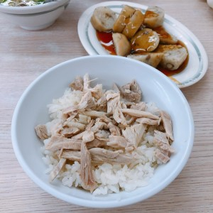
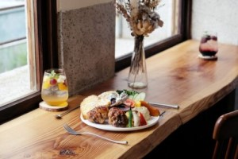

| 郭家雞肉飯 | |
| 嘉義火雞肉飯各家特色不同，多採用扎實有彈性的火雞胸肉撕成絲或切片、切丁鋪放在飽滿帶有光澤的米飯上，融合獨家特調醬汁，通常以銅板價格就能享有飽足又美味的一碗。吃一口，滋味濃郁、滿口溢香！ |  |
| 綠洲 Oasis Brunch | |
| 綠洲主要供應質量兼具的拼盤式早午餐，「味噌醬烤雞腿」值得推薦，一份竟有兩隻雞腿，菜色豐富、營養美味。食物簡直要從盤子炸開的大份量，讓價格顯得更為合理。百分之百自製的布丁也值得推薦，吃來口感溫潤細緻的秘密，就在於加了成本較高的私房成分，誠意十足。 |  |
| 林聰明沙鍋魚頭 | |
| 林聰明沙鍋魚頭傳承三代，至今超過一甲子，堅持品質、用心料理成為嘉義人氣美食。推薦的「林聰明沙鍋龍虎斑魚頭獨享鍋」特別推出冷凍個人鍋調理包，讓民眾在家也可輕鬆享用嘉義特色美食。 | .jpg) |